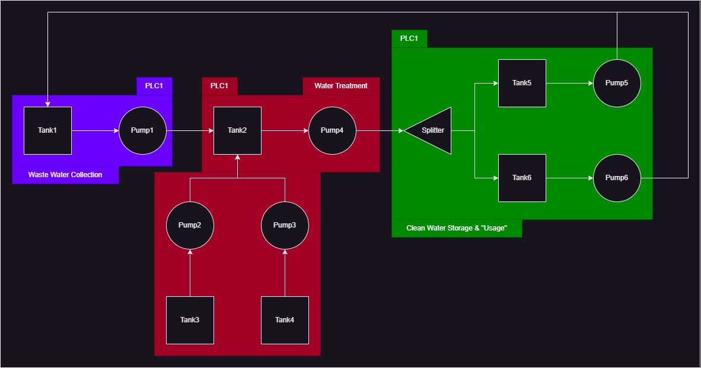

Simulated Process System Overview
This section describes the full water treatment process simulated by SecureSim, including its stages, flow logic, and control behavior.
System Summary
The system models a simplified water treatment facility using tanks, pumps, and a splitter. It is managed by 3 PLCs and 1 SCADA controller.
Stage |
Description |
Controller |
|---|---|---|
Waste Collection |
Wastewater stored in Tank 1 |
PLC 1 |
Chemical Treatment |
Chemical input from Tanks 3 & 4 into Tank 2 |
PLC 2 |
Clean Water Output |
Splitter sends output to Tanks 5 & 6 |
PLC 3 |
Overflow Return |
Overfilled Tanks 5/6 drain back to Tank 1 |
PLC 3 |
Physical Layout
Tank 1: Wastewater intake (initial: 900)
Tank 2: Mixing/cleaning tank
Tank 3: Chemical A (initial: full)
Tank 4: Chemical B (initial: full)
Tank 5/6: Clean storage (initial: 100 each)
Process Flow
Waste Pumping
Trigger: Tank 1 > 500
Action: Pump 1 sends fluid to Tank 2
Controlled by: PLC 1
Chemical Mixing
Trigger: Tank 2 < 1000
Action: Pump 2 and Pump 3 draw from Tanks 3 and 4
Controlled by: PLC 2
Draining Tank 2
Trigger: Tank 2 >= 1000
Action: Pump 4 activates to drain into the splitter
Controlled by: PLC 2
Output Distribution
Splitter divides output evenly to Tanks 5 and 6
Passive (not controlled)
Overflow Return
Trigger: Tank 5 or 6 > 250
Action: Pump 5 or 6 returns fluid to Tank 1
Controlled by: PLC 3
SCADA Emergency Logic
The SCADA controller can issue a global emergency stop using:
Register 99 = 1
Effect: Closes all pumps immediately
This is defined in the SCADA actions array in Process_sim.json.
Visualization
The UI and render_process_graph() function show this layout as a node-edge graph.
Use the live dashboard to:
View tank volumes and pump states
Toggle defenses and attacks
Trigger emergencies or monitor SCADA responses
System Diagram
(Include visual if desired via Sphinx image directive)
{kind=link}